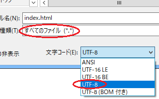

HTMLタグを手打ちしての作り方
パソコン上でホームページを作成する際、何らかの作成ソフトを使用するのが一般的です。当サイト運営者はAdobe社の「Dreamweaver」を使用していますが、他にもホームページ・ビルダーなどの作成ソフトがあります。
これらのソフトを持っていない場合でも、HTMLタグとCSSの知識があれば、Windows付属のメモ帳などを使ってHTMLタグを手打ちしながら作ることができます。
Windows付属のメモ帳でホームページを作る方法
メモ帳を使ってホームページを作成する場合、以下の手順で作成していくとよいでしょう。
■①フォルダの作成
まずは「右クリック - 新規作成 - フォルダー」でパソコン上に「フォルダ」を作成します。
後でサーバーにファイルをアップロードする際、このフォルダの「中身のみ」をアップロードすることになるため、フォルダ名については何でもかまいません。概ね、サイト名やドメイン名などの分かりやすい名前を付けておくことをおすすめします。
このフォルダ内にHTMLファイルやCSSファイルを作成していくことになります。
■②HTMLファイルやCSSファイルを作成
次に、メモ帳を開いてHTMLタグを打ち込んでいき、トップページのindex.htmlファイルを作成します。
このHTMLファイルを全くのゼロから作成するのは難しいと思いますので、テンプレートのサンプルなどを参考にして作成していくとよいでしょう。
完成したら「ファイル - 名前を付けて保存」を選択します。

ファイル名を「index.html」と入力し、ファイルの種類で「すべてのファイル」を選択、文字コードは「UTF-8」を指定して①で作成したフォルダ内に「保存」します。このUTF8にはBOM付きもありますが、ウェブ作成では「BOMなし」を選択するのが一般的です。
同様に、拡張子「小文字英数.css」でCSSも作成します。
このスタイルシートも「UTF-8」で保存しておきましょう。
画像も使用する際は別途に「image」や「img」などのフォルダも作成し、画像関係はまとめてそちらのフォルダに入れておきます。
取りあえずはこれで完成ですが、index.htmlファイルを「右クリック - プログラムから開く」でFirefoxなどのブラウザを選択すれば、パソコン上で表示を確認することができます。
例えば、このように表示されるはずです。
けれども、この状態ではパソコン上のファイルをブラウザで表示しただけのため、まだネット上では公開されておらず、自分しか閲覧することができません。
実際にウェブ上で公開して誰でもアクセス可能な状態にするには、ネット上の無料ホームページスペースやレンタルサーバーにこれらのファイルを転送する必要があります。
ホームページファイルの転送とサイト表示の確認
パソコン上でサイトが完成したら、ホームページスペースやレンタルサーバーのpublic_htmlフォルダなどに、これらのファイルをFTP接続などでアップロードします。アップロードする際は①のフォルダごとではなく、「中身のファイルとimgなどのフォルダ」をアップロードします。
あるいは、ホームページスペース側からパソコン内のファイルを指定してアップロードするのでも同じことです。もしくは、パソコン上で作成するのではなく、レンタルサーバー側のファイルマネージャーでこれらのファイルをコピペで直接作成してしまうのもよいかと思います。
いずれにしましても、ウェブ上のホームページスペースにファイルがありさえすれば問題ありません。
- ウェブ上のファイル → 実際に表示されるファイル
- パソコン上のファイル → 実際のサイトの表示には無関係
あとはホームページのURLにアクセスし、サイトが表示されるのを確認しましょう。
この作成したファイルを修正する際は、メモ帳の「ファイル - 開く」、「ファイルの種類 - すべてのファイル」を選択し、文字コードを「自動検出」や「UTF-8」に指定して修正することができます。
この場合でも、パソコン上のファイルを修正しただけでは実際の表示には反映されないため、必ず上書きアップロードしてウェブ上のファイルを更新する必要があります。
ホームページ作成ソフトを利用する場合、これらのファイルの保存や管理、アップロード、表示の確認などがしやすくはなりますが、上記の手順でもほぼ同じように作成することができます。
無料テキストエディタでの作り方
上記のように、Windows付属のメモ帳でも作成することができますが、メモ帳は基本的に「.txt」のテキストファイルを作成するためのツールのため、HTMLファイルやCSSファイルの作成にはあまり向いていません。
古いホームページなどでよく使われている「euc-jp」の文字コードが使えませんし、ちょっとしたミスで文字化けしてしまうことも多いです。また「右端で折り返す」にチェックを入れながら作成していると変なところで改行が入ってしまうこともあります。
そのような意味で、Windows付属のメモ帳で作るのはあまりお勧めできません。
そのため、メモ帳ではなく、無料のテキストエディタを使うと便利です。
このテキストエディタにもいろいろありますが、「TeraPad」や「Brackets」、「Crescent Eve」などの無料のテキストエディタが使いやすいと思います。
■おすすめの無料テキストエディタ
- TeraPad → 軽くて使いやすい
- Brackets → 高機能。少し重たい
- Crescent Eve → 軽くて使いやすい
何らかのテキストエディタを使う場合でも、作成する手順については上記と同じです。
テキストエディタでは保存できる文字コードの種類が多いですが、たいていは「UTF-8」で保存しておけば間違いありません。このUTF-8で保存する場合、「UTF-8」や「UTF-8N」などの種類がありますが、「UTF-8N」を選択するとよいでしょう。
ちなみに、この「UTF-8」と「UTF-8N」の違いについてですが、「N」が付く方がBOMなしです。
- UTF-8 → BOMあり
- UTF-8N → BOMなし
BOM（ボム）は「byte order mark」のことで、Unicodeで記述されているかを判別するための先頭につける数バイトのデータのことですが、ウェブ作成の際はBOMなしの「UTF-8N」を選択されることをおすすめします。